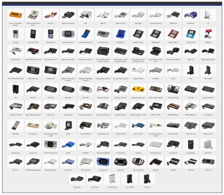

this page is history on gaming Video games have been around since the early 1970s. The first commercial arcade video game, Computer Space by Nutting Associates, was introduced in 1971. In 1972, Atari introduced Pong to the arcades and since then gaming has expanded evolved Pong was a great hit when it came out. Move your cursor to get the slides to bounce back the moving square it will speed up as you progress. That same year, Magnavox offered the first home video game system. Dubbed the Odyssey, it did not even have a microprocessor! The core of the system was a board with about four-dozen transistors and diodes. The Odyssey was very limited -- it could only produce very simple graphics, and required that custom plastic overlays be taped over the television screen. In 1975, Atari introduced a home version of its popular arcade game, Pong. The original home version of Pong was sold exclusively through Sears, and even carried the Sears logo. Pong was a phenomenal success, opening the door to the future of home video games.
